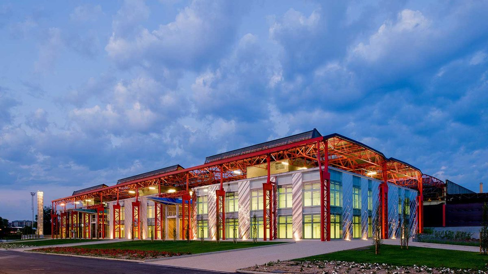

12–13 giugno · Torino · Festival immaginario
Info e luoghi
Scopri le sedi di Segnale e come raggiungerle.
Le sedi del festival



Come arrivare
Visualizza la mappa a schermo intero
- Sede centrale — Corso Duca degli Abruzzi 24, Torino. Indicazioni stradali
- Politecnico al Valentino — Viale Mattioli 39, Torino. Indicazioni stradali
- Sede di Mirafiori — Corso Luigi Settembrini 178, Torino. Indicazioni stradali